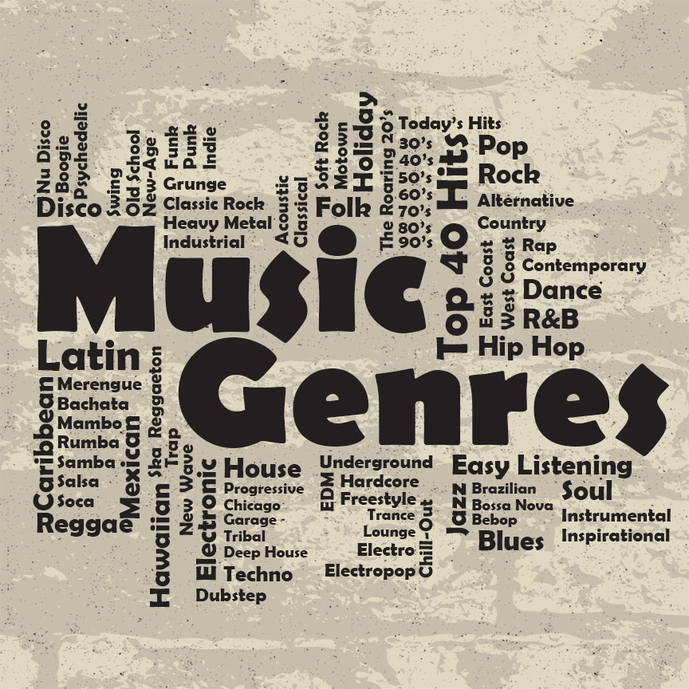

Explore Music Styles
World of Sounds
About the Website
Welcome to "Explore Music Styles!" Here, we celebrate the diversity of music, from the classics to the cutting-edge beats of today...
Popular Music Genres
- Jazz: The smooth rhythms of Miles Davis and Ella Fitzgerald.
- Rock: From the legends like The Beatles to the power of Led Zeppelin.
- Electronic: Dive into the world of house, trance, and techno beats.
- Classical: Experience the timeless works of Beethoven and Mozart.
- Hip-Hop: The rhymes and beats that shape modern culture.

How to Discover New Music
Here are some tips for exploring new genres:
- Use music streaming services to explore curated playlists.
- Attend local concerts and live performances.
- Join online communities to share and discover music.